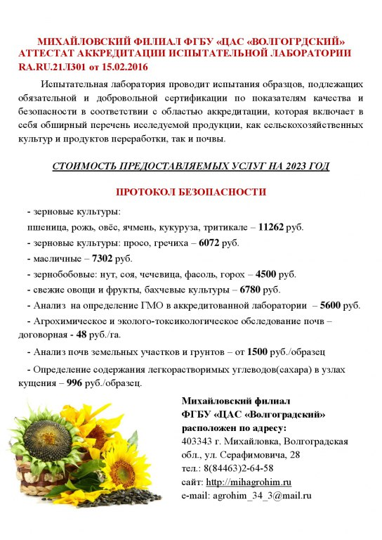

Наши услуги
Михайловский филиал ФГБУ "ЦАС"Волгоградский" предлагает проведение агрохимического и эколого- токсикологического обследования земель сельскохозяйственного назначения в целях контроля по обеспечению почв питательными веществами (гумус, щелочногидролизуемый азот, подвижные соединения фосфора и калия, подвижные соединения кобальта, марганца, меди и цинка, а также почва проверяется на загрязнение тяжелыми металлами, пестицидами и радионуклидами). Почвенный образец отбирается вручную с элементарного участка площадью 40 гектар и представляет собой смешанную почвенную пробу, составленную из 20 индивидуальных проб, взятых тростьевым буром на глубину пахотного слоя (0,20-0,25 м). По желанию клиента возможен отбор почвенных проб механическим пробоотборником. За выполненный объем работы предлагаем утверждённые расценки, на 2023 48 руб/га. На время проведения работ «Заказчик» обязан обеспечить работникам «Исполнителя» проживание, питание и заправку автомобильного транспорта ГСМ. После обработки материалов полевых изысканий и аналитических данных «Заказчику» вручается материал агрохимического и эколого- токсикологического обследования почв и картограммы содержания в почве гумуса, подвижных соединений фосфора и калия и щелочногидролизуемого азота. После камеральной обработки материал вручается «Заказчику».
Михайловский филиал ФГБУ "ЦАС"Волгоградский" Территория обслуживания включает в себя 10 районов северо-западной зоны Волгоградской области: Алексеевский, Еланский, Киквидзенский, Кумылженский, Михайловский, Новоаннинский, Нехаевский, Новониколаевский, Серафимовичский, Урюпинский. Проведение агрохимического, почвенного и геоботанического обследования почв земель сельскохозяйственного назначения, в том числе с применением автоматического пробоотборника. Проведение анализов почв приусадебных и дачных участков по основным показателям плодородия почв: N,P,K, pH, микроэлементы, органическое вещество (гумус) и другие. Проведение работ по закладке полевых опытов с различными видами и дозами удобрений. А также обеспечение научного сопровождения сельскохозяйственных производственных процессов. Проведение анализов в образцах сельскохозяйственной продукции и выдача протоколов испытаний на показатели безопасности ( тяжелые металлы, пестициды, радионуклиды и др.). Оказываем содействие в ускоренном получении декларации соответствия сх культуры (пшеницу, рожь, ячмень, подсолнечник, гречиху, просо, арбуз, дыню и др.) Определение технических показателей в зерновых, зернобобовых и технических культурах: клейковина, ИДК, белок (протеин), число падения, сорная и зерновая примесь, влажность, масличность, кислотное число, зараженность вредителями и др. Подготовка картографического материала на бумажной основе сельхозпроизводителей. Растительная диагностика полевых сельскохозяйственных культур: листовая, тканевая., определение сахаров в узлах кущения озимых.